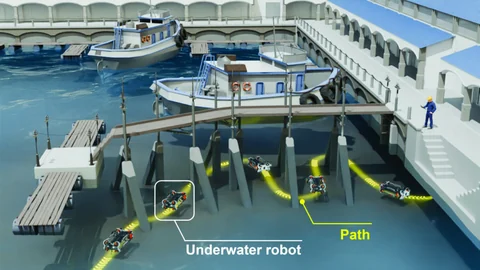
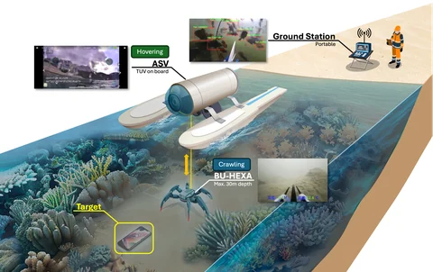
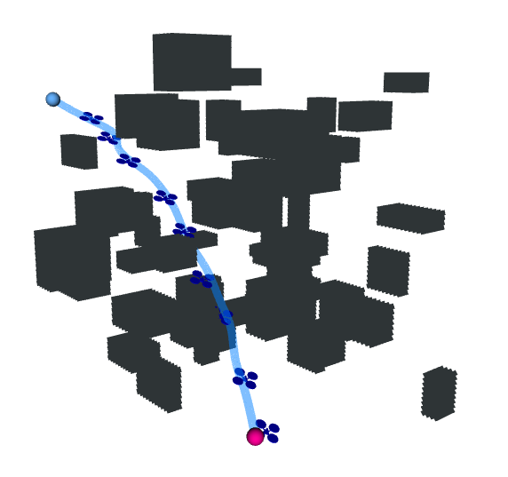
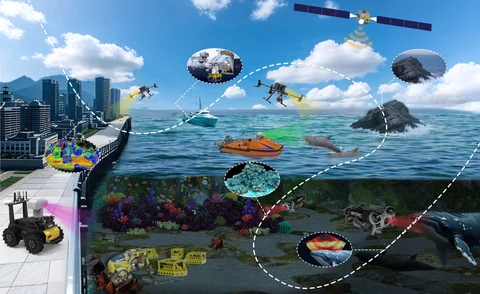
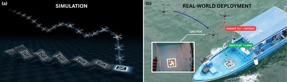
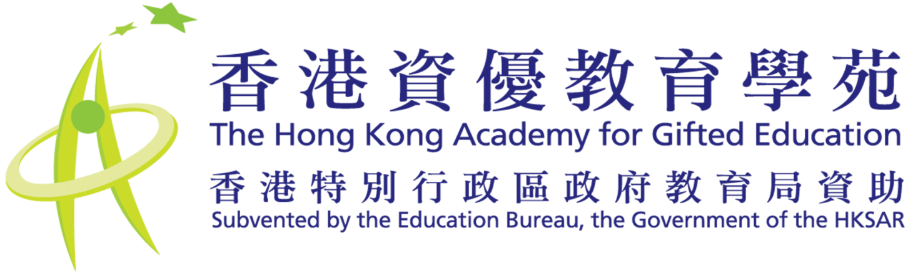

|
欢迎就无人机及海洋机器人研究、航空课程，以及学生科创项目洽谈合作。如有构思，欢迎电邮联络我。
新闻
- 我的署名评论〈海洋经济会是香港新出路吗〉刊于《明报》。
- 科大工学院报道我们的海洋机器人团队于第11届香港大学生创新及创业大赛获资讯技术二等奖。
- 接受香港中通社采访，分享对香港低空经济及航空科普教育的看法。
研究我的研究着重机器人的自主规划、控制及协作，应用包括码头水下结构检查、水下搜证，以及无人机在移动平台上降落。淡黄色标示为精选研究。
 |
PierGuard: A Planning Framework for Underwater Robotic Inspection of Coastal Piers
Pengyu Wang*, Hin Wang Lin*, Jialu Li, Jiankun Wang, Ling Shi, Max Q.-H. Meng
* 同等贡献
IEEE Transactions on Automation Science and Engineering, 2025
paper / arXiv为水下机器人规划路线，检查沿岸码头结构。 |
 |
Coastal Underwater Evidence Search System with Surface-Underwater Collaboration
Hin Wang Lin, Pengyu Wang, Zhaohua Yang, Ka Chun Leung, Fangming Bao, Ka Yu Kui, Jian Xiang Erik Xu, Ling Shi
ICARCV, 2024
paper / arXiv / video结合水面及水下机器人，协同进行近岸水下搜证。
相关项目奖项
第十四届「挑战杯」中国大学生创业计划竞赛（2024）全国决赛团队银奖。
职业安全健康局「最佳职安健研究项目奖学金」研究生组优胜者；颁奖日期：。 |
 |
MINER-RRT*: A Hierarchical and Fast Trajectory Planning Framework in 3D Cluttered Environments
Pengyu Wang, Jiawei Tang, Hin Wang Lin, Fan Zhang, Chaoqun Wang, Jiankun Wang, Ling Shi, Max Q.-H. Meng
IEEE Transactions on Automation Science and Engineering, 2025
paper / arXiv在障碍物密集的三维环境中，分层规划机器人的运动轨迹。 |
 |
Space–Land–Ocean Coordination Robotics System: Definition, Case Study, and Outlook
Pengyu Wang, Hin Wang Lin, Jiankun Wang, Ling Shi, Max Q.-H. Meng
IEEE Robotics & Automation Magazine, 2026 (early access)
paper探讨空、陆、海协同机器人系统的定义、案例及发展方向。 |
 |
WaveLander: A Generalizable Hierarchical Control Framework for UAV Landing on Wave-Disturbed Platforms via Reinforcement Learning
Chun-Kit Li*, Iok Long Sit*, Ming Fung Siu, Ka Yu Kui, Hin Wang Lin, Pengyu Wang, Ling Shi
* 同等贡献
ICARCV, 2026 (accepted)
arXiv运用强化学习，让无人机在随波浪起伏的平台上降落。 |
专利发明人：林衍宏。光敏全景摄影装置，香港短期专利HK1224505A；公报日期：。
学历 | 香港科技大学 博士，电子及计算机工程（在读）
2024-09 - 在读 研究型硕士，电子及计算机工程
2022-09 - 2024-08 工学士，计算机工程
2017-09 - 2022-08 研究导师：施凌教授 |
工作经验
| 香港警务处 重点及搜查组无人机队暑期实习生
2022-07至2022-08
透过警队学长计划 (PMP) 参与实习。 |
 | 香港资优教育学苑 进阶学习体验部暑期实习生
2021-06至2021-08 |
| 香港迪士尼乐园 数码及科技部全职实习生
2019-06至2020-05 |
精选奖项- 中国国际大学生创新大赛（2025）高教主赛道团队银奖；基于协同异构多机器人的海洋生物与环境监测。
- 中国国际大学生创新大赛高教主赛道团队金奖，2024；「飞X创造」新一代智能飞行教具。
- 第十八届「挑战杯」全国大学生课外学术科技作品竞赛一等奖，2023；宏宇创新航空教育项目。
- 香港十大杰出大专学生，2021。 人物介绍影片
- 中国青少年科技创新奖，2020。
- 田家炳奖学金（创新与创意），2021–2022学年。
- 科大ECE毕业专题Industry Day银奖，2022。
|